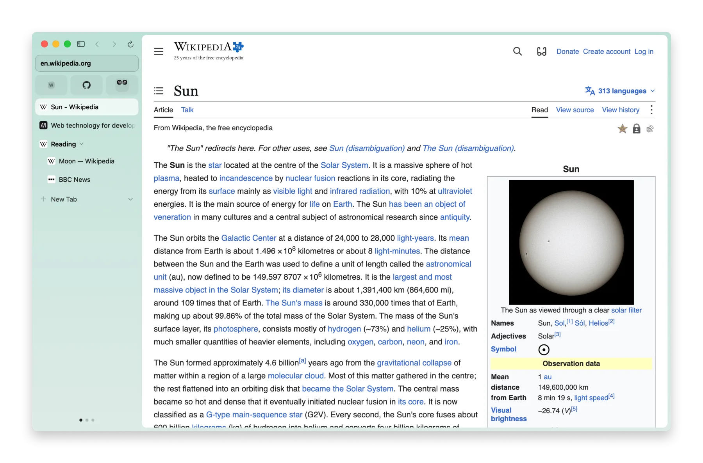
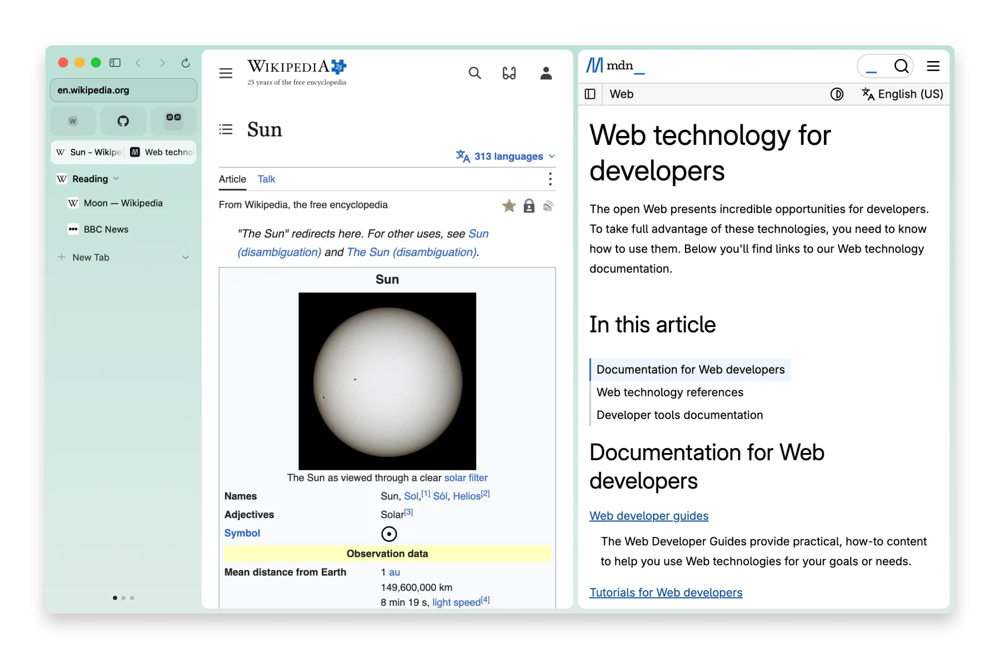
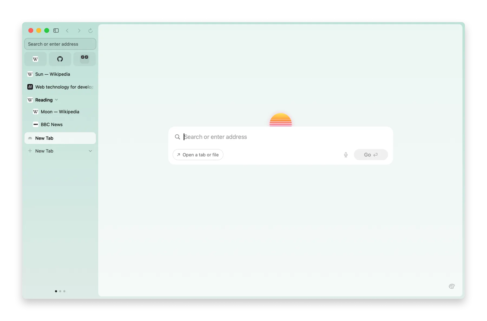
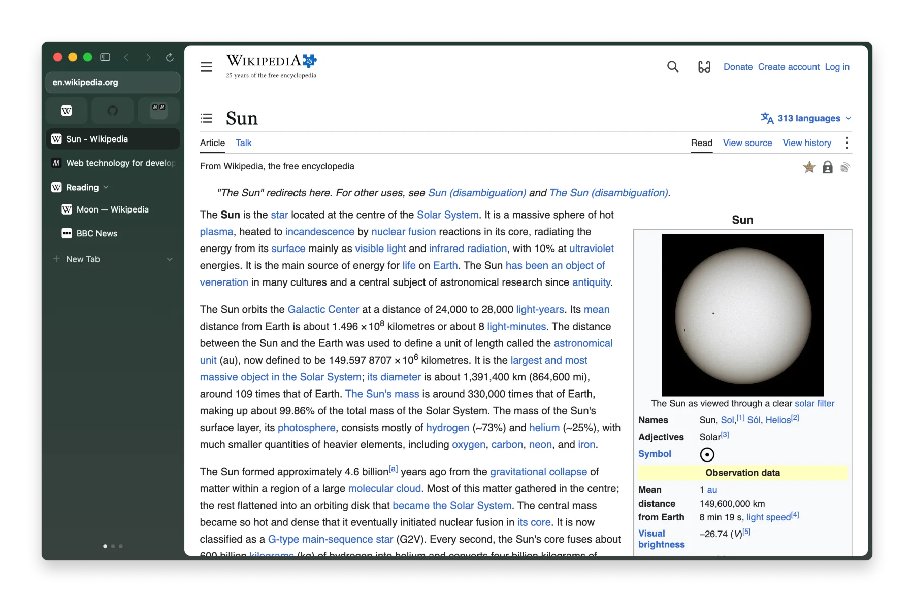

Tabs in the sidebar
Keep pinned sites as tiles. Put related tabs in folders. Switch profiles with the dots at the bottom.

Pages side by side
Split a window to keep pages together. A split holds up to three tabs.

A sun on New Tab
Open a new tab to search beneath Solara's sun.

Light and dark
Pick a color for each profile, and a light or dark appearance.

Also in Solara
- Command bar
- Command-L finds tabs, bookmarks and history, or searches the web.
- Peek
- Open a link over the page, then close it or keep it as a tab.
- No account
- Sync, if you turn it on, goes through a folder in your own iCloud Drive, end-to-end encrypted.
- No telemetry
- No usage data and no crash reports. Google's background services are compiled out of the engine, and uBlock Origin is built in.
- Chrome extensions
- Install them from the Chrome Web Store.
- Moving in
- Bring bookmarks, history, passwords, cookies and tabs from Chrome, Safari, Firefox, Arc, Dia and more.
Install
- Download the DMG, open it, and drag Solara to Applications.
- Solara updates itself. Choose Stable or Nightly in Settings › General › Update channel.
Or install it with Homebrew:
brew install --cask andrewbenson/solara/solara